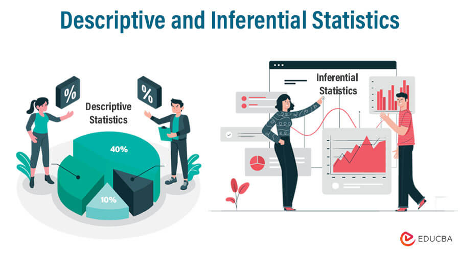
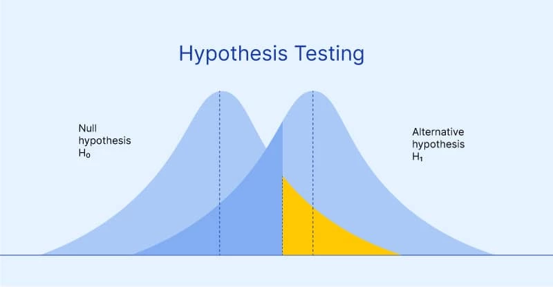
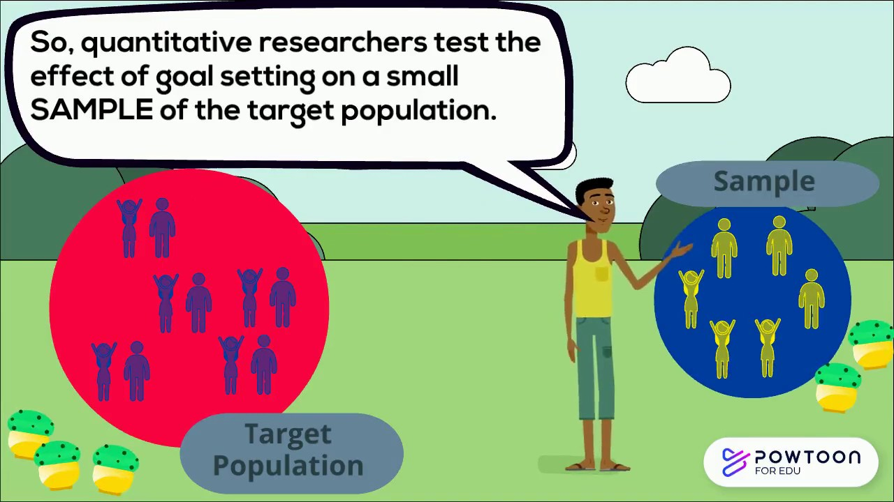

Research Methods and Professional Practice
Overview
This module provides a practical foundation in research methods that enables students to conduct research in practical settings. The approach covers various tools and techniques that a researcher may deploy and facilitates continual feedback throughout the module through cases and project tasks..
Self SWOT Analysis
I performed a self-SWOT analysis as part of my personal and professional growth strategy to determine my opportunities, threats, weaknesses, and strengths. I learned a lot from this analysis about my strengths and opportunities for improvement and I am hoping to use them to increase my chances of success. My weak spots will need to be addressed with a strong focus to improve abilities while seizing the opportunities available for development. Knowing about threats enables me to be prepared to minimize their effects. Overall, my SWOT analysis provides a guide for my successes and ongoing development.
Collaborative Learning Discussion 1
Discussion Topic: Codes of Ethics and Professional Conduct
Case Study: Abusive Workplace Behaviour
Both the Association for Computing Machinery (ACM) and the British Computer Society (BCS) have established ethical guidelines to address professional conduct, including abusive workplace behaviour. The case study involving a technical team lead, a team member, and a manager, inside an IT team illustrates standards and values that raise ethical, legal, social, and professional concerns within the computing industry (ACM Ethics, 2018). The (ACM) Code of Ethics and Professional Conduct has several sections that address abusive behaviour in work environments (ACM, 2018). The relevant sections are as follows:
Section 2: Professional Responsibilities
Section 3: Professional Leadership Principles
Section 4: Compliance with the Code
The ACM code incorporates specific guidelines to deal with injustice and equality, but the BCS code involves these concepts into its sections on professional ability, public interest, and duty to the profession (British Computer Society, n.d.). BCS code 1.2, focuses on preventing activities that could cause adverse effects, including abusive workplace behaviour. It is similar to ACM code 1.2 of avoiding harm. ACM highlights equality and non-discrimination in code 1.4 and BCS demonstrates respecting and valuing alternative perspectives in its code 4.2 Respect and value opposing views: by promoting a fair and polite work environment by appreciating a different belief. In summary, both ACM and BCS codes highlights that professionals in this industry should understand their obligations to build and uphold a respectful and abuse-free workplace. Regardless of their origin country, both codes are applicable to all individuals, no matter their membership level, the role they perform, or the region where they are working or discharge their contractual responsibilities (Werner, 2021).
Collaborative Learning Discussion 2

Case Study: Accuracy of information
Ethical research prioritises the dignity, liberties, security, and well-being of individuals, rather than simply gathering data. The evaluation of a given topic's ethical suitability for study will unavoidably differ from project to project. Research that is appropriate for one particular project at a given time may not always be acceptable for another (Stuart and Barnes, 2005).
In this case, Abi clearly encounters a number of ethical challenges in relation to presenting and assessing the data that he has gathered about the nutritional benefits of the new cereal. Selectively highlighting positive findings of the cereal while minimising negatives can be deceptive, even if Abi doesn’t change the data. Transparency and honesty are prioritised in the ACM Code of Ethics, and they may be violated by presenting only positive analyses and leaving out negative ones, as this does not give a complete and true representation of the findings (Anderson, 2018). The ACM Code of Ethics states that professionals should "avoid harm" (1.2), "be fair and reliable" (1.3), and "respect confidentiality" (1.7). Abi is ethically bound to deliver a full analysis of the data that includes both positive and negative findings. Transparency is an essential concept in research, and it is crucial for maintaining confidence and honesty within the industry.
Food quality testing has historically been highly subjective, time-consuming, and adverse. Over time, a large number of efficient, trustworthy, and non-destructive methods for determining the quality criteria of food products have been developed (Saha and Manickavasagan, 2021). Nevertheless, Abi has responsibility for the accuracy and reliability of the analyses he conducts and the reports he delivers. He is not exempt of his responsibility to provide the data in an ethical manner, even if the manufacturer could misuse his findings. Returning research results to the communities from where they were extracted follows three fundamental ethical laws: goodwill, no harm, and respect for humans and their freedom of choice. These principles together make up the analytical basis for any study (Hintz and Dean, 2019). Thus, Abi's other options would be to openly discuss with the company regarding the ethical implications of only sharing certain results or he can ask for a peer review of his findings and analysis. This provides a further stage of verification and guarantees the validity and integrity of the results. In order to guarantee that his results are utilised ethically, Abi must be ready to interact with the government organisations. He should also take into consideration of any applicable laws related to his submission of accurate results, since the findings have an impact on the public's health (Grummon et al., 2020).
Unit 6: Quantitative Methods - Descriptive and Inferential Statistics
Exercise 6.1 - workbook Exa 8.1B.xlsx
Variation in Weight Loss:
Comparison: The standard deviation measures the spread of weight loss results among participants. Diet A has a marginally lower standard deviation (2.536 kg) than Diet B (2.769 kg), indicating that the weight loss outcomes for Diet A participants were slightly reliable.
Sample Size: The sample size for both diets is equal—50 participants. This equal sample size reduces concerns over sample size-related biases by ensuring that the assessment of mean weight loss and standard deviations is neutral.
Summary:
Exercise 6.2 - workbook Exa 8.2B.xlsx
Variation in Weight Loss:
Compared to Diet B (3.745 kg), the median weight loss for Diet A (5.642 kg) is higher. This suggests that individuals following Diet A lost more weight than those using Diet B at the centre of the distribution.
Interquartile Range (IQR):
The middle 50% of the data is represented by the IQR, which provides an idea of how widely distributed the central section of the data is. Diet A's IQR (3.285 kg) is somewhat lower than Diet B's (3.4505 kg), indicating that Diet A participants' weight loss outcomes were somewhat more centred around the median and showed a little less variability in the central 50% of the data.
Summary: Quality: Diet A appears to be more successful on average as evidenced by a higher median weight loss compared to Diet B. Reliability: Diet A's IQR is somewhat smaller than Diet B's, suggesting that people on Diet A were more regularly losing weight in the middle range. In general, compared to Diet B, Diet A seems to be more effective in terms of usual weight reduction and somewhat more reliable in its central findings, based on the median weight loss and the IQR.
Exercise 6.3 - workbook Exa 8.3D.xlsx
Brand A Preference:
A higher percentage of respondents in Area 2 preferred Brand A (21.1%) compared to Area 1 (15.7%).
Brand B Preference:
A higher percentage of respondents in Area 2 preferred Brand B (33.3%) compared to Area 1 (24.3%).
Other Brands Preference:
A higher percentage of respondents in Area 1 preferred other brands (60.0%) compared to Area 2 (45.6%).
Summary:
- Brand A: Compared to Area 1 (15.7%), a greater number of people in Area 2 (21.1%) chose Brand A.
- Brand B: Compared to Area 1 (24.3%), a greater number of participants in Area 2 (33.3%) chose Brand B.
- Other Brands: Compared to Area 2 (45.6%), a greater number of participants in Area 1 (60.0%) selected other brands.
- In general, there are differences in the breakfast cereal brand preferences across the two demographic groups. Area 1 has a greater affection for other brands, but Area 2 has a bigger admiring for both Brand A and Brand B. It suggests multiple demographic groups have various attitudes towards brands.
Unit 7: Inferential Statistics and Hypothesis Testing
Exercise 7.1 - workbook Exa_8.4F.xlsx
The process of analysing whether there is sufficient data to reject a null hypothesis (H₀) in support of an alternative hypothesis (H₁) is known as hypothesis testing. One of the popular toolpak for Data Analysis is T TEST. The paired, two-sample assuming identical variances and the two-sample assuming disparate variances t-test is used to compare means.
Unit 9: Validity and Generalisability in Research
Exercise 9.1(Bar Charts in Excel) - workbook Exa 9.1D.xlsx
Summary:
Exercise 9.2- workbook Exa 9.2E.xlsx
In a study on the prevalence of a certain species of heather, two different heathland locations A and B were studied. A number of transepts (pre-defined areas of land) were examined at each location, and classified according to the prevalence of the species of interest.
Exercise 9.3- workbook Exa 9.3B.xlsx
The relative frequency histogram for the Diet A and B
Assignment 1- Literature Review
Topic: AI-based assistive technology for the physically disabled and the elderly
A Comprehensive literature review to evaluate the latest trends in AI based assistive technology .
Reference
Assignment 2- Research Proposal Presentation
A 15-minute voice over presentation for my research proposal. This includes an overview of the research, selection of research topic, design and methodology, as well as data collection analysis methods.
Reference
Icons
- © Damith Rathnayaka - ePortfolio
- Design: HTML5 UP